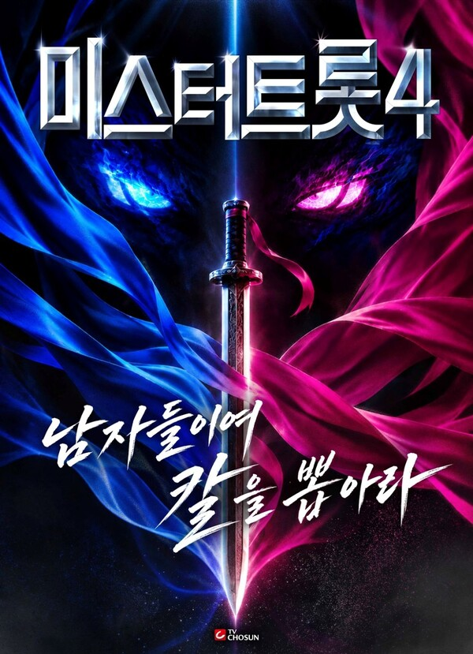
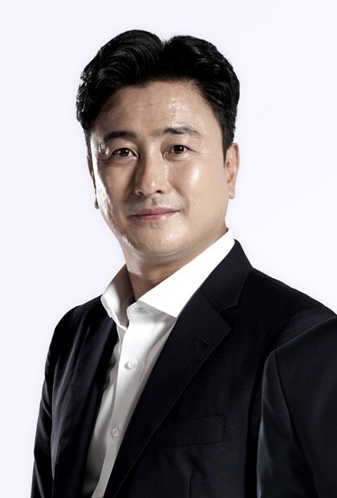
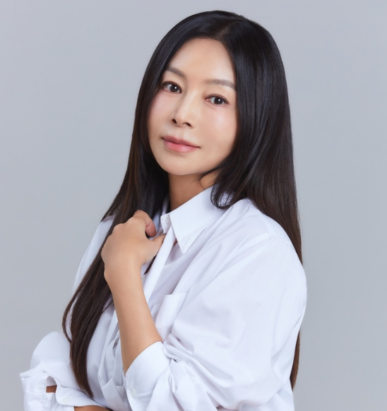
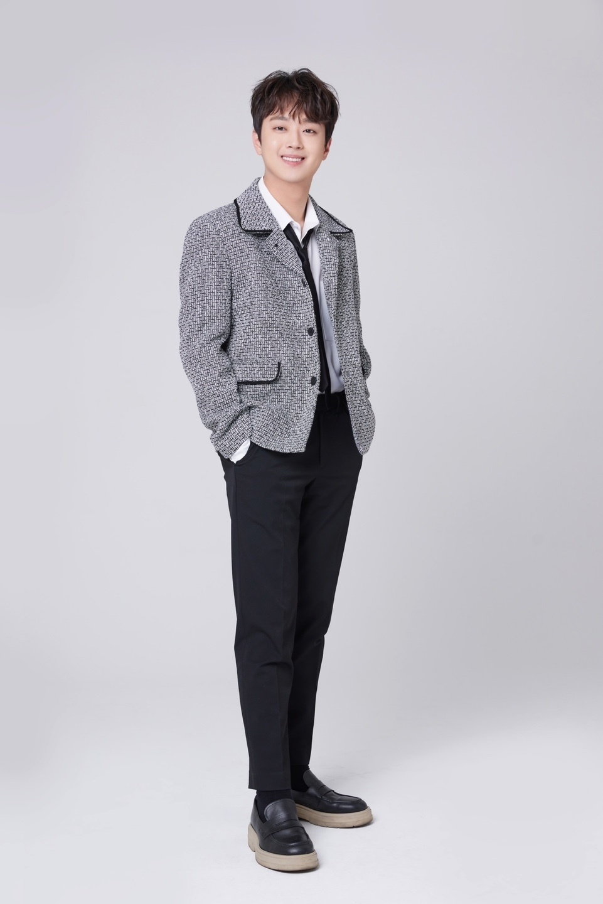
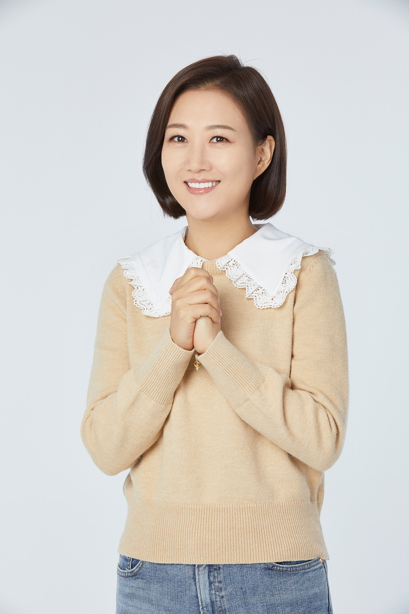

미스터트롯4에 안정환과 황신혜가 새 마스터로 합류해요. 스포츠와 연기라는 서로 다른 경험이 트로트 무대와 만나 어떤 이야기를 들려줄지 궁금한데요. 두 사람의 합류 소식과 함께 마스터 구성, 집중해서 보고 싶은 무대의 매력을 차근차근 정리해봤어요.
미스터트롯4 새 마스터, 두 이름이 눈길을 끌어요
축구선수 출신 방송인 안정환과 배우 황신혜가 마스터석에 함께해요. TV조선에서 방송 예정인 미스터트롯4는 새로운 트로트 스타를 발굴하는 오디션 프로그램이에요. 두 사람은 노래를 부르는 경연 참가자가 아니라 도전자들의 무대를 살펴볼 마스터로 합류해요. 스포츠와 연기 분야에서 활동한 인물들이 트로트 경연에서 만난다는 조합부터 호기심이 생기네요. 익숙한 이름인데도 심사석에 앉은 모습은 어떻게 다가올지 궁금해요.
저는 두 사람의 이름을 나란히 보니 심사평을 듣는 재미도 기대하게 돼요. 같은 노래를 들어도 누군가는 소리의 힘에, 누군가는 가사의 뜻을 전하는 표정에 마음이 움직일 수 있잖아요. 서로 다른 경험을 가진 마스터들이 한 무대에서 어떤 부분을 발견할지 생각해보는 것만으로도 관전 포인트가 생겨요. 어떤 말로 도전자들의 매력을 짚어줄지, 본방송에서 만나볼 두 사람의 호흡도 기다려지네요.

안정환의 승부 경험, 무대를 보는 시선이 궁금해요
안정환은 축구선수와 지도자로 활동하며 경쟁의 현장을 경험했고, 축구 오디션 프로그램에서 참가자들의 기량과 가능성을 살펴본 이력도 있어요. 그래서 트로트 경연에서는 어떤 장면에 관심을 보일지 자연스럽게 궁금해져요. 노래를 잘하는지를 듣는 일과 운동선수의 기량을 판단하는 일은 각 분야의 전문성이 필요한 일이에요. 그와 함께 긴장 속에서 자기 몫을 해내려는 도전자의 마음을 바라보는 관점은 흥미롭게 연결해볼 수 있겠네요.
가령 곡을 시작할 때의 집중이나 끝까지 흐름을 이어가려는 태도를 어떤 말로 풀어줄지 기대해요. 긴장되는 순간을 누구보다 잘 아는 사람이라 도전자에게 건네는 한마디도 궁금해요. 솔직한 입담으로 친숙한 인물인 만큼 도전자에게 건네는 말투도 궁금하고요. 한마디의 평가가 참가자의 장점을 구체적으로 설명해준다면, 노래를 듣는 입장에서도 그 매력을 새롭게 알아볼 수 있을 것 같아요. 어떤 가능성을 발견할지 차분히 지켜보고 싶네요.

황신혜에게 기대하는 건 가사의 마음을 읽는 시선이에요
황신혜는 드라마와 영화에서 다양한 인물을 연기해온 배우예요. 배우가 노래 경연의 마스터로 함께한다는 소식에 저는 가사의 이야기를 어떻게 받아들일지가 궁금해졌어요. 인물의 마음을 표정과 목소리로 표현해온 경험이 도전자들의 무대를 바라보는 데 어떤 시각을 더할 수 있을까요. 노래에 담긴 감정이 듣는 사람에게 어떻게 전해지는지, 한 곡 안에서 어떤 이야기가 느껴지는지에 대한 설명을 들을 수 있다면 반가울 것 같아요.
슬픈 노래라고 해서 큰 표정만이 마음을 움직이는 건 아닐 거예요. 담담하게 부른 한 구절이나 힘을 덜어낸 목소리에서도 가사의 뜻을 느낄 수 있겠죠. 연기를 해온 마스터라 어떤 구절과 표현에 마음을 기울일지 기대하게 돼요. 저는 참가자의 사연을 미리 정해놓고 보기보다, 노래 자체에서 느껴지는 감정과 심사평이 어떻게 이어지는지 듣고 싶어요. 배우의 눈에 들어온 작은 매력이 도전자를 이해하는 또 하나의 실마리가 될 수도 있겠네요.

미스터트롯4 마스터 구성, 서로 다른 경험을 만나요
마스터 구성에는 이찬원, 김희재, 안성훈, 박지현, 김용빈, 손빈아도 이름을 올렸어요. 역대 시리즈의 무대에 섰던 가수들이 도전자들을 바라보는 자리에 함께하는 거예요. 장윤정과 작곡가 조영수도 마스터로 참여해요. 가수와 작곡가, 스포츠와 연기 분야의 인물까지 함께한다는 구성이 눈길을 끄네요. 명단을 볼 때는 이들이 경연 참가자로 재도전하는 것으로 혼동하지 않는 것도 필요해요. 여기서 이야기하는 합류는 마스터로서의 참여예요.
이 조합에서 제가 기대하는 건 한 사람을 바라보는 여러 설명이에요. 노래의 어떤 부분이 좋았는지, 가사가 어떻게 들렸는지, 무대에서 어떤 개성이 느껴졌는지를 서로 다른 말로 들을 수 있다면 재미있겠죠. 경연 경험이 있는 가수들은 어떤 이야기를 건네고, 음악을 만드는 작곡가는 무엇을 짚을지도 궁금해요. 모든 마스터가 같은 감상을 내놓을 필요는 없을 것 같아요. 서로 다른 의견이 구체적인 이유와 함께 전해진다면 응원할 도전자를 찾아가는 과정도 더 풍성해질 수 있겠네요.

기대되는 건 도전자와 노래가 함께 기억되는 무대예요
안정환과 황신혜의 합류는 마스터석을 보는 즐거움을 더해주지만, 경연에서 만나고 싶은 중심은 역시 도전자들의 노래예요. 이름이 익숙하지 않은 가수가 한 곡으로 자기 매력을 전하는 순간을 기대하게 되네요. 힘 있는 목소리도 좋고 섬세한 표현도 좋겠지만, 서로 다른 개성을 가진 사람들이 어떤 노래를 선택할지부터 궁금해요. 아직 이름을 모르던 도전자의 노래가 마음에 남는 순간, 응원할 가수도 하나둘 생기겠죠. 그런 만남을 기다리고 싶어요.
저는 심사평을 듣게 된다면 평가의 결론뿐 아니라 그 이유에도 귀를 기울여보려고 해요. 어떤 대목에서 개성이 느껴졌는지, 노래의 이야기가 어떻게 전달됐는지를 함께 살펴보면 한 곡을 더 다채롭게 즐길 수 있을 것 같아요. 안정환의 경쟁 경험과 황신혜의 연기 경험이 그런 감상에 어떤 단서를 더해줄지도 기대되고요. 마스터들의 개성이 참가자의 목소리를 더 잘 들여다보게 해주면 좋겠어요. 도전자의 이름과 부른 노래가 함께 마음에 남는 무대를 만나고 싶은 바람이에요.
